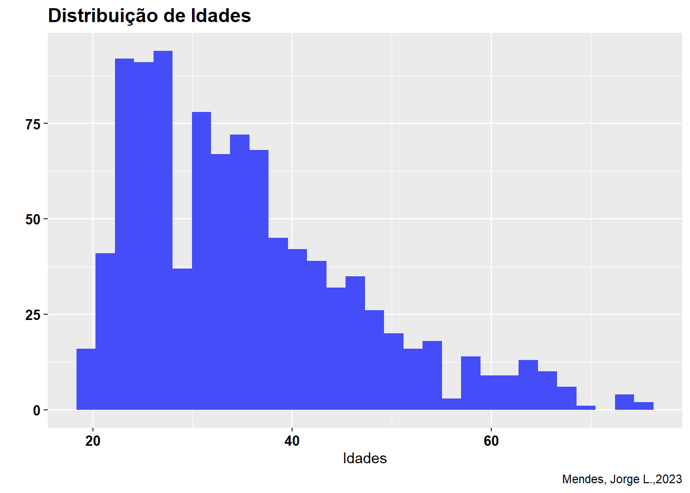
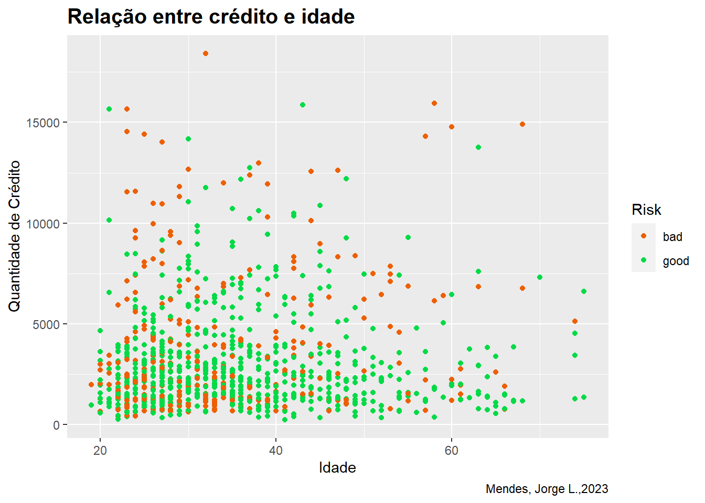

Introdução
O XGBoost (Extreme Gradient Boosting)(Chen et al. 2023) é uma biblioteca de código aberto que fornece um algoritmo de aprendizado de máquina de aumento de gradiente para tarefas de classificação, regressão e outros tipos de previsão. Ele se baseia na técnica de ensemble learning, que combina vários modelos de aprendizado de máquina mais simples para criar um modelo mais poderoso.

O XGBoost usa uma estratégia de aumento de gradiente para construir um modelo preditivo de forma iterativa, em que cada novo modelo é treinado para corrigir os erros cometidos pelos modelos anteriores. O algoritmo utiliza árvores de decisão como modelo base, que são combinadas usando um algoritmo de aumento de gradiente para produzir um modelo mais preciso e robusto.
Bibliotecas
Carregando os dados
Os dados podem ser encontrados no kaggle.
df <- read.csv("GermanCredit.csv")
df <- df |> select(2:11)
df[df==""] <- NA
df |> head() |>
knitr::kable(col.names = c("Age","Sex","Job","Housing","Saving.accounts",
"Checking.account","Credit.amount","Duration",
"Purpose","Risk"))| Age | Sex | Job | Housing | Saving.accounts | Checking.account | Credit.amount | Duration | Purpose | Risk |
|---|---|---|---|---|---|---|---|---|---|
| 67 | male | 2 | own | NA | little | 1169 | 6 | radio/TV | good |
| 22 | female | 2 | own | little | moderate | 5951 | 48 | radio/TV | bad |
| 49 | male | 1 | own | little | NA | 2096 | 12 | education | good |
| 45 | male | 2 | free | little | little | 7882 | 42 | furniture/equipment | good |
| 53 | male | 2 | free | little | little | 4870 | 24 | car | bad |
| 35 | male | 1 | free | NA | NA | 9055 | 36 | education | good |
Podemos ver o tipo de dado que estamos analisando:
glimpse(df)Rows: 1,000
Columns: 10
$ Age <int> 67, 22, 49, 45, 53, 35, 53, 35, 61, 28, 25, 24, 22, 6…
$ Sex <chr> "male", "female", "male", "male", "male", "male", "ma…
$ Job <int> 2, 2, 1, 2, 2, 1, 2, 3, 1, 3, 2, 2, 2, 1, 2, 1, 2, 2,…
$ Housing <chr> "own", "own", "own", "free", "free", "free", "own", "…
$ Saving.accounts <chr> NA, "little", "little", "little", "little", NA, "quit…
$ Checking.account <chr> "little", "moderate", NA, "little", "little", NA, NA,…
$ Credit.amount <int> 1169, 5951, 2096, 7882, 4870, 9055, 2835, 6948, 3059,…
$ Duration <int> 6, 48, 12, 42, 24, 36, 24, 36, 12, 30, 12, 48, 12, 24…
$ Purpose <chr> "radio/TV", "radio/TV", "education", "furniture/equip…
$ Risk <chr> "good", "bad", "good", "good", "bad", "good", "good",…Podemos ver algumas estatísticas dos dados:
summary(df) Age Sex Job Housing
Min. :19.00 Length:1000 Min. :0.000 Length:1000
1st Qu.:27.00 Class :character 1st Qu.:2.000 Class :character
Median :33.00 Mode :character Median :2.000 Mode :character
Mean :35.55 Mean :1.904
3rd Qu.:42.00 3rd Qu.:2.000
Max. :75.00 Max. :3.000
Saving.accounts Checking.account Credit.amount Duration
Length:1000 Length:1000 Min. : 250 Min. : 4.0
Class :character Class :character 1st Qu.: 1366 1st Qu.:12.0
Mode :character Mode :character Median : 2320 Median :18.0
Mean : 3271 Mean :20.9
3rd Qu.: 3972 3rd Qu.:24.0
Max. :18424 Max. :72.0
Purpose Risk
Length:1000 Length:1000
Class :character Class :character
Mode :character Mode :character
Podemos ver quantidade de linhas vazias em cada coluna:
for (i in colnames(df)){
v <- df[,i] |> is.na() |> sum()
print(paste("coluna:",i,"|Número de linhas vazias:",v))
}[1] "coluna: Age |Número de linhas vazias: 0"
[1] "coluna: Sex |Número de linhas vazias: 0"
[1] "coluna: Job |Número de linhas vazias: 0"
[1] "coluna: Housing |Número de linhas vazias: 0"
[1] "coluna: Saving.accounts |Número de linhas vazias: 183"
[1] "coluna: Checking.account |Número de linhas vazias: 394"
[1] "coluna: Credit.amount |Número de linhas vazias: 0"
[1] "coluna: Duration |Número de linhas vazias: 0"
[1] "coluna: Purpose |Número de linhas vazias: 0"
[1] "coluna: Risk |Número de linhas vazias: 0"Análise Exploratória
Podemos ver a proporção de homens e mulheres.
df |> group_by(Sex) |>
summarise(count = n()) |>
e_charts(Sex) |>
e_pie(count,roseType ="radius") |>
e_title("Proporção dos Sexos")A distribuição de idade:
df |> select(Age)|> ggplot(aes(x =Age)) +
geom_histogram(fill ="#454df8",bins = 30) +
labs(title = "Distribuição de Idades", y ="",x ="Idades",
caption = "Mendes, Jorge L.,2023")+
theme(plot.title = element_text(face = "bold",size = 14),
axis.text.x = element_text(face = "bold",colour = "#030202",size =10),
axis.text.y = element_text(face = "bold",colour = "#030202",size =10))
Podemos analisar a relação entre idade e quantia de crédito:
df |> ggplot() +
geom_point(aes(x = Age, y = Credit.amount,color = Risk)) +
scale_color_manual(values = c("#ed6002","#02db47")) +
labs(title = "Relação entre crédito e idade",
y = "Quantidade de Crédito", x= "Idade",
caption = "Mendes, Jorge L.,2023") +
theme(plot.title = element_text(face = "bold",colour = "#030202",size =15))
Modelagem
Transformação
Primeiro devemos transformar os dados categóricos em binários (0 e 1).
Se as variáveis forem binárias como bem e mal, arriscado e seguro, e etc basta fazer como foi mostrado no tópico Transformação. Caso tenha mais parâmetros (por exemplo fácil,moderado e difícil) é necesário criar novas colunas que serão chamadas de variáveis dummies preenche-las com 0 e 1 conforme a ausência ou presença.
Seleção
Para abastecer o modelo é necessário definir quais serão as variáveis de entrada e de saída. Para nosso problema queremos criar um modelo que classifique o risco do empréstimo com base na idade, sexo, crédito e duração. E pela quantidade de dados podemos separar um conjunto de treino e um conjunto de teste de forma aleatória para podermos avaliar o modelo.
set.seed(123)
indice_treino <- sample(1:nrow(df),0.7*nrow(df),replace = FALSE)
df_train <-df[indice_treino,]
df_test <-df[-indice_treino,]
X_train <- df_train |> select(Age,Credit.amount,SexBi,Duration)
y_train <- df_train |> select(RiskBi)
X_test <- df_test |> select(Age,Credit.amount,SexBi,Duration)
y_test <- df_test |> select(RiskBi)Os dados a serem selecionados podem ser determinados com análises estatísticas mais profundas como correlações e pca, e também vai depender da natureza do problema e do custo computacional envolvido.
É possível fazer uma limpeza dos dados, ou seja, descartar linhas que podem atrapalhar o desempenho do modelo, preecher linhas que possuem dados ausentes, remover outliers, e etc.
Modelo
Com os dados separados podemos escolher os parâmetros do modelo para treina-lo. Podemos definir o algoritmo, a profundidade da árvore, o número de iterações e entre outros parâmetros.
parametros <- list(objective = "binary:logistic",
eval_metric = "error"
)
modelo <- xgboost(data = as.matrix(X_train),
label = as.matrix(y_train),
nrounds = 1,
eta =0.1,
params = parametros)[1] train-error:0.228571 Aqui podemos ver como fica a visualzação de apenas um árvore.
xgb.plot.tree(model = modelo, fsize = 8, margin = 30,
ylim = c(0, 0.2), xlimits = c(0, 1),
show_info = TRUE, dpi = 150)Predição
Resultados
R1 <- predict(modelo,newdata = data.matrix(X_test)) |>
as_tibble() |>
mutate(R = if_else(value >= 0.5,1,0))
R1 |> head() |>
knitr::kable(col.names = c("values","R"),align ="l")| values | R |
|---|---|
| 0.9893589 | 1 |
| 0.8878149 | 1 |
| 0.9059939 | 1 |
| 0.4113036 | 0 |
| 0.5090782 | 1 |
| 0.0504705 | 0 |
Acurácia do modelo.
Conclusão
Esse post é uma apresentação bem resumida sobre o tema de aprendizado de máquina. Existem difentes formas de se construir e avaliar um modelo de predição. Podemos melhorar a seleção de dados, a construção do modelo e escolher métricas mais adequadas , tudo isso vai depender da natureza do problema.